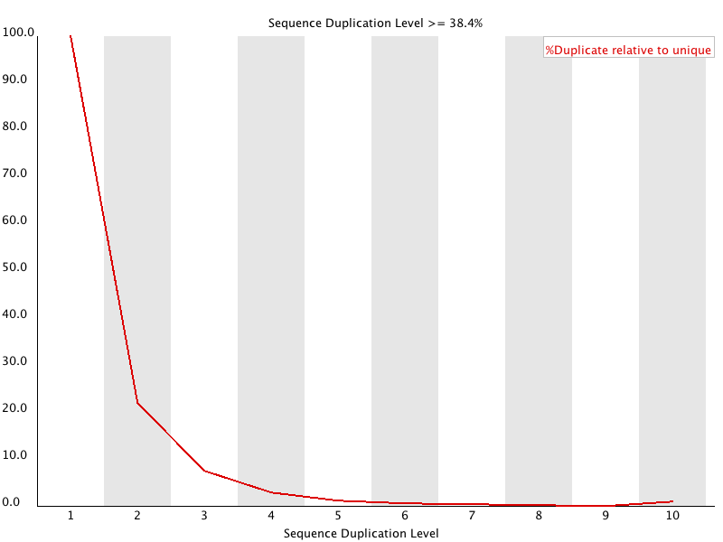

In a diverse library most sequences will occur only once in the final set. A low level of duplication may indicate a very high level of coverage of the target sequence, but a high level of duplication is more likely to indicate some kind of enrichment bias (eg PCR over amplification).
This module counts the degree of duplication for every sequence in the set and creates a plot showing the relative number of sequences with different degrees of duplication.

To cut down on the memory requirements for this module only sequences which occur in the first 200,000 sequences in each file are analysed, but this should be enough to get a good impression for the duplication levels in the whole file. Each sequence is tracked to the end of the file to give a representative count of the overall duplication level. To cut down on the amount of information in the final plot any sequences with more than 10 duplicates are placed into the 10 duplicates category - so it's not unusual to see a small rise in this final category. If you see a big rise in this final category then it means you have a large number of sequences with very high levels of duplication.
Because the duplication detection requires an exact sequence match over the whole length of the sequence any reads over 75bp in length are truncated to 50bp for the purposes of this analysis. Even so, longer reads are more likely to contain sequencing errors which will artificially increase the observed diversity and will tend to underrepresent highly duplicated sequences.
This module will issue a warning if non-unique sequences make up more than 20% of the total.
This module will issue a error if non-unique sequences make up more than 50% of the total.